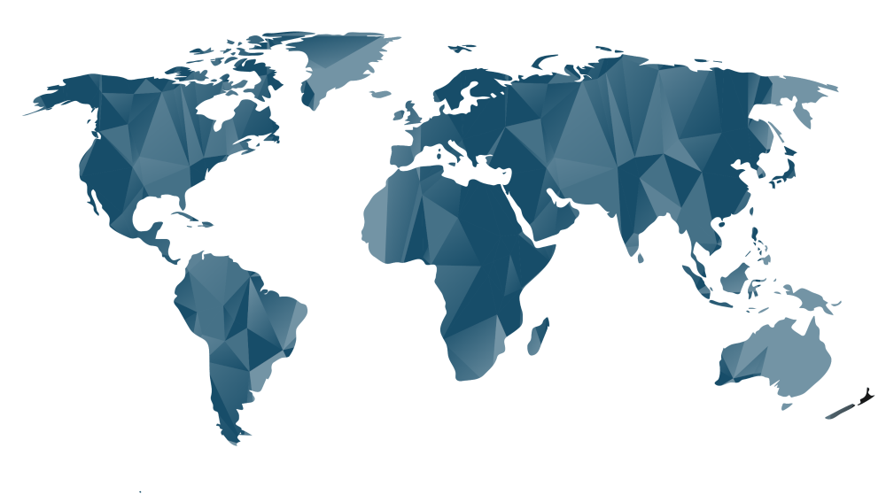

<!DOCTYPE html>
<html lang="pt-bt">

<head>
  <meta charset="UTF-8">
  <meta name="viewport" content="width=device-width, initial-scale=1.0">
  <link rel="stylesheet" href="style.css">
  <title>Programação Web 2021/1 &bull; PROVA 1</title>
</head>

<body>

  <div id="root"></div>

  <script src="https://unpkg.com/react@17.0.0/umd/react.development.js"></script>
  <script src="https://unpkg.com/react-dom@17.0.0/umd/react-dom.development.js"></script>
  <script src="https://unpkg.com/@babel/standalone@7.12.4/babel.js"></script>

  <script type="text/babel">

    /**********************************************************************************
    1. Converta os códigos comentados abaixo em componentes de função
    **********************************************************************************/

    /* PRIMEIRO COMPONENTE 
      <div class="input-set">
        <label for="area">Área (km²)</label>
        <input id="area" type="number" />
      </div>
    */

  function CompArea ({id, textoLabel, quandoAlterado}){
    return (
      <div className="input-set">
        <label htmlFor={id}>{textoLabel}</label>
        <input id={id} type="number" onChange={quandoAlterado}/>
      </div>
    )
  }

    /* SEGUNDO COMPONENTE 
      <div class="input-set">
        <label for="pop">População</label>
        <input id="pop" type="number" />
      </div>
    */

  function CompPopulacao ({id, textoLabel, quandoAlterado}){
    return (
      <div className="input-set">
        <label htmlFor={id}>{textoLabel}</label>
        <input id={id} type="number" onChange={quandoAlterado}/>
      </div>
    )
  }

    /* TERCEIRO COMPONENTE 
      <div class="result">
        <div>Densidade populacional:</div>
        <div>Categoria:</div>
      </div>
    */

  function CompResult ({densPop, catDens}){
    return (
      <div className="result">
        <div className="result">Densidade Populacional: {densPop} </div>
        <div className="result">Categoria:<br /><strong>{catDens}</strong></div>
      </div>
    )
  }

    function Page() {

      /**********************************************************************************
        2. Crie aqui as variáveis de estado que julgar necessárias
      **********************************************************************************/

      const [infoCenso, setInfoCenso] = React.useState ({
        area: undefined,
        pop : undefined,
        densPop: undefined,
        catDens: undefined
      })

      const { area, pop, densPop, catDens } = infoCenso 

      /*
        quando abri o arquivo no Chrome para verificação há um erro no console que indica:
        Uncaught ReferenceError: monitoraAlteracao is not defined
        que foi a Função indicada para escutar as alterações do Imput no prop quandoAlterado do Componente
      */
      function monitoraAlteracao(event) { // verifica o evento
        /* Faça as modificações necessárias na manipulação das variáveis de estado
           nas linhas abaixo. */

        if (event.target.id === 'area') setInfoCenso({...infoCenso, area: event.target.value})
        else if (event.target.id === 'pop') setInfoCenso({...infoCenso, pop: event.target.value})
      }


      /**********************************************************************************
        3. Escreva aqui o código necessário para o useEffect()

        Nesse código, deverá ser feito o seguinte:
        - O cálculo da densidade populacional, igual a população dividida por área
        - A definição da categoria, conforme as regras:
          - Quando densidade < 100 -> Baixa densidade
          - Densidade > 100 e < 1000 -> Média densidade
          - Densidade > 1000 -> Alta densidade
        - Atualize as variáveis de estado apropriadas, para usar seu valor no terceiro
          componente
        - NÃO SE ESQUEÇA DAS DEPENDÊNCIAS!!!!
      
      **********************************************************************************/

      React.useEffect(() => {

        /*
          Definindas 2 variáveis temporárias como visto no exFix03,
          como "pulo do gato", para evitar a atualização do State no meio da Condição e assim
          não termos prejudicada a atualização das informações do Estado, pois sempre será repetido
          primeiro ciclo do state, caso não o atualizemos somente no final da condição.
        */
        let catDensTemp, densPopTemp

        if (isNaN(pop) || isNaN(area))  {
          densPopTemp = '---'
          catDensTemp = '---'  // verifico se os campos não estão vazios, senão:
        }
        else densPopTemp = pop / area // calculo a Densidade Populacional

        // abaixo faço as verificações das diferentes densidades
        
        if (densPopTemp < 100) {
          catDensTemp = "Baixa Densidade";
        }
        else if (densPopTemp > 100 && densPopTemp < 1000) {
          catDensTemp = "Média Densidade";
        } // como proposto esta ficando de fora o próprio 100

        else if (densPopTemp > 1000) {
          catDensTemp = "Média Densidade";
        } // como proposto está ficando de fora o próprio 1000
         
        else {
          catDensTemp = "Insira Dados Válidos!" ; // caso dê 100 ou 1000, ou seja inserido um valor negativo pode ser exibido aqui, mas neste caso ficou como um alerta geral
        }

        setInfoCenso({...infoCenso, densPop: densPopTemp, catDens: catDensTemp})

      }, [area, pop]) // somente será executado o useEffect quando houver modificação dos dados nas duas dependências indicadas aqui


      // retorno do que será exibido na página através do Componente Page
      return (
        <> {/* Uso de Fragment para poder inserir mais elementos no retorno */}
          <h1>Densidade populacional</h1>

          <div id="world-map">
            
          </div>

          {/* Coloque aqui o primeiro componente */}

          <CompArea id="area" textoLabel="Área (km²)" quandoAlterado={monitoraAlteracao} />

          {/* Coloque aqui o segundo componente */}

          <CompPopulacao id="pop" textoLabel="População" quandoAlterado={monitoraAlteracao} />

          {/* Coloque aqui o terceiro componente */}

          <CompResult densPop={densPop} catDens={catDens} />

        </>
      )
    }

    /**********************************************************************************
        4. No final, sua página deve ficar semelhante à imagem do arquivo screenshot.png.
           Todo o CSS necessário já está no arquivo styles.css. Não é necessário fazer
           nenhuma alteração de estilo, exceto usar os nomes de classe corretos nos
           componentes.

        - A densidade e a categoria devem ser atualizadas imediatamente quando os inputs
          da área ou da população forem alterados

        - Alguns valores para testar:

        PAÍS            ÁREA              POPULAÇÃO       DENSIDADE CALCULADA
        Brasil          8510295,914       211755692       24.882294827333542    (Baixa d.)
        Japão           377975            126440000       334.51947880150806    (Média d.)
        Bangladesh      144000            163220762       1133.4775138888888    (Alta d.)

      **********************************************************************************/

    ReactDOM.render(<Page />, document.getElementById('root'))

  </script>

</body>

</html>

<!--
//    1. Atualização de estado
//    2. Atualização do componente
//    3. useEffect()
-->